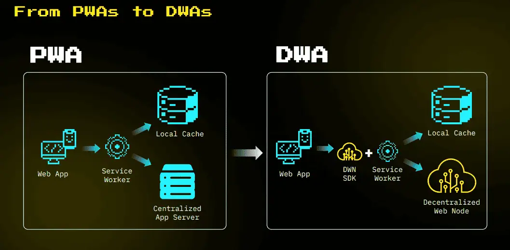

Web descentralizada (Web 5.0)
WEB 5
Desde el año 2022 hasta la actualidad, se ha comenzado a hablar del concepto de Web 5.0, una propuesta que plantea una evolución hacia una web más descentralizada, donde los usuarios tengan mayor control sobre su identidad digital y sus datos personales. Este término fue popularizado por Jack Dorsey a través de su empresa Block, Inc. y su división tecnológica TBD.
Cómo funciona la Web 5.0
En una breve presentación de TBD, Web5 se define como una plataforma web descentralizada (DWP) que permite a los desarrolladores crear aplicaciones web descentralizadas (DWA) utilizando identificadores descentralizados (DID) y nodos web descentralizados (DWN). Este enfoque devuelve el control y la propiedad de la identidad y los datos a los individuos, lo que se denomina Web5.
Cómo opera la Web 5.0
Web5 se apoya en la Bitcoin Lightning Network, un protocolo de Capa 2 que funciona de manera independiente a la cadena principal de bloques de Bitcoin. La integración de Web5 en este protocolo permite una velocidad de red ágil sin depender de tokens, tasas de "gas" para transacciones, validadores de confianza o mecanismos de consenso adicionales. Todo esto se realiza con el objetivo de establecer una infraestructura de servidores personales de igual a igual y reducir la centralización en la gobernanza.
En cierta medida, el concepto de una web descentralizada representa un regreso a la tecnología de la era Y2K. Un ejemplo práctico de este concepto es el protocolo de Internet BitTorrent. BitTorrent es un exitoso sistema peer-to-peer de código abierto que permite compartir archivos, similar a lo que hizo el Napster original con la música, aunque en ese caso de manera ilegal.